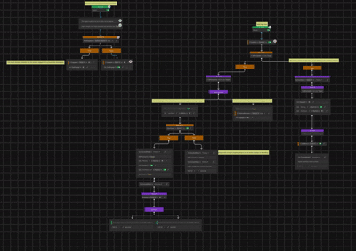
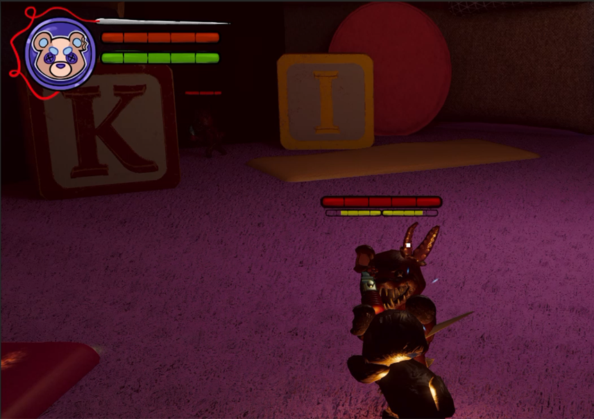
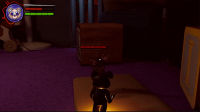

This game was a group capstone project at NEIT. We were tasked with developing a finished game in 20 weeks and publishing it on itch.io or steam.
Our game is Fluff'dUp, a Souls-Like game where you play as a teddy bear navigating a cursed pillow fort. Fluff'dUp was developed using Unity Engine.
As one of two programmers on this project, I developed multiple integral systems for the game. These include enemy ai, a parry mechanic with posture system, xp and level up system, saving/loading, and game settings.
The enemies in the game use a behavior tree which is built with Unity's Behavior Graph package. Enemies have three main states; roaming, chasing, and attacking.
While in the roaming state, enemies will choose a random location within a radius every few seconds and navigate to that location. When the player enters a detection radius, the enemy will begin sending out raycasts to "look" for the player. If one of these raycasts collides with the player, the enemy will enter the chasing state.
While in the chasing state, the enemy will target the player's current location, eventually stopping a certain distance away from them to begin attacking. This marks the transition to the attacking state.
Enemies have multiple attacks to choose from, and do so based on some randomness and a set combo order. After each attack the enemy has a higher chance to pick the next attack in the order, but they will not always do this. This was done to make the attacks less repetitive without making them completely random.
Enemies also perform a check of how many other enemies are currently attacking the player. For balancing purposes, I did not want too many enemies attacking at once, which could become overwhelming and unfair. If a certain variable number of enemies are already engaged in combat with the player, any more enemies that approach will hang back and wait. When one enemy dies and the number attacking goes back below the threshold, an enemy in waiting will move forward to engage the player.
This system is inspired by the FromSoftware game Sekiro. Players can perform a timing-based parry to block an enemy attack and avoid all damage.
The timing for parries is done using animation events. On a certain frame of the enemy's attack an event will fire which begins what I call the "parry window". If the player presses the parry input during this window, they will successfully block the attack. Another animation event ends the parry window.
Another component to this is the posture system, which is also directly inspired by Sekiro. The player's parries and attacks build up "posture damage" on the enemy, and when that reaches a certain threshold, the enemy will become stunned for an extended period of time. Posture damage also degrades over time after a cooldown.
The player has multiple statistics that can be increased, including health, weapon damage, and stamina. XP is calculated using a linear curve, with more XP required for each subsequent level up. Killing enemies grants the player XP.
To save the game, I created a SaveData class which contains members for all relevant data. This includes the player's location, and statistics like current health, maximum health, damage multipliers, etc.
When the game saves, this data is collected into a SaveData object, which is serialized into a JSON file. When starting the game, the player can load a previous save. In this instance the data from the existing JSON file is repopulated into all relevant GameObjects to start the game in the previously saved state.
The game's settings menu allows players to change multiple graphics and audio settings, as well as rebind controls.
For audio, I created an Audio Mixer with channels for music and sound effects. This allowed me to set up sliders in the settings menu to control volume for all music and sound effects within the game.
The most difficult part of the settings was giving the player the ability to rebind controls. Unity's Input System is very robust, but does not have any support for control glyphs/icons.
It is easy enough to switch the input for an action within an InputActions object in Unity, but if you want to display an icon for the button or key you need to develop your own system for that. My system uses a Scriptable Object that defines the matching icons for each possible input, for both keyboard and controllers. Each element of the Scriptable Object contains the Input name which is used by the Input System and the matching icon. The menu then populates fields for each control with the correct icons. A settings JSON file stores the currently set inputs for both keyboard and controller, and the menu will automatically switch icons based on which input method is currently in use.
Each control field in the menu has a button for switching the input. When the player clicks this button, the game "listens" for an input. When the new input is pressed, it is saved in the JSON file and the icon is updated.
Completing this project taught me many things. There were unforseen technical issues, personality conflicts, group members that struggled, and we had to manage this while taking multiple other classes.
When doing a group project in college there are always difficulties, and a project that you spend 20 weeks on only exacerbates this. We had to manage our different personalities and strengths, and maintain constant communication.
One of the most important things for myself and the other programmer on the project was making sure we were on the same page at all times. Before we even began working on the game, we had many long discussions about how we would architect the systems we needed. We made UML diagrams and flowcharts for every system in the game. We did code reviews with each other to make sure we both understood everything the other person was doing.
Another challenge we faced was over-scoping our game. We had so many great ideas that we wanted to do, but 20 weeks is a very short time period for a small group to develop a game. We had to make difficult decisions and scrap certain ideas in order to reach the finish line. We quickly learned that we needed to be realistic with the scope of the project in the allotted time.
In terms of personal growth, I think this project was very important for me. There were moments where I felt overwhelmed, there were bugs that were difficult to reslove. We had a group member that didn't deliver on their promises. I had to communicate openly with my teammates and resolve these conflicts. In the end, we were able to complete the project despite these difficulties.